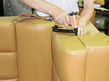

タックの椅子張り替えは銀座の有名飲食店から長年依頼をされる職人が担当いたします。「長く愛される椅子やソファーのサポーター」をテーマに、傷んでいる箇所を修理してお気に入り椅子、ソファーをリフォーム致します。長年の実績の中でご家庭用のダイニングチェアからオフィスチェア、飲食店のベンチシートまで、あらゆる椅子・ソファーの張替実績がございますので、お気軽にお問合せください。
椅子やソファーのクリーニングはタック HOME > サービス一覧 >椅子・ソファー張替え作業の流れ
椅子ソファー張替え タックのこだわりと依頼フローをご紹介します
椅子張替えのこだわり
タックは張替えコンシェルジュがお客様応対、
ヒアリング、納品までを一貫して行います。
椅子やソファー宅配便で送っていただいて、作業後配送する事業者様もありますが、タックでは必ず椅子張り替えコンシェルジュがお伺いいたします。実物を拝見させて頂いて、お客様のご要望を直接お聞きしたうえでご提案やお見積を致します。「大切にされている家具だからこそお客様とのコミュニケーションを大切する」それが私たちのこだわりです。
椅子張り替えのご依頼方法
お客様がお持ちの家具をベストな状態で再生(リメイク)させるために、タックでは現物調査とヒアリングを専門の椅子張替えコンシェルジュが行います。椅子張り替え、ソファー張り替えに関する疑問や質問がありましたら、細かなことでもお気軽にご相談ください。
椅子張り替え 納品までの流れ
- お電話・メールにてお問合せ
メールまたはお電話でお問合せください。 - お電話・メールにて概算お見積り
椅子･ソファーの形状、状態をお伺いし、概算見積をさせて頂きます。 - 担当がご訪問・張替えのご説明、生地の選定
弊社の担当が訪問して張替えのご説明、生地の選定を致します。 - 正式なお見積りを提出
現地調査・ヒアリングに基づいて正式なお見積を提出いたします。 - 弊社職人による張替業務
熟練の当社職人が心をこめて作業にあたらせて頂きます。 - 納品
仕上がった椅子・ソファーを納品致します。